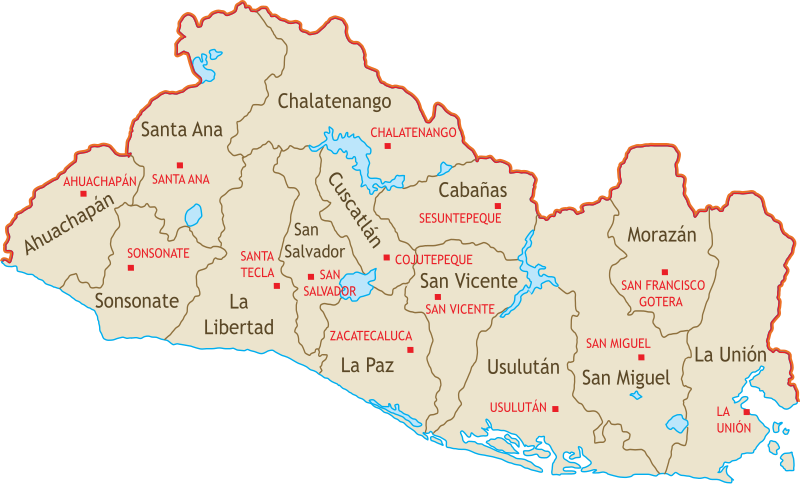
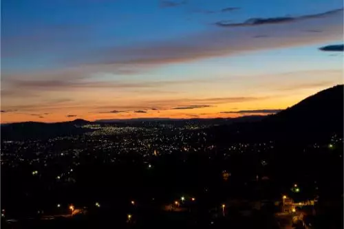

El Salvador, oficialmente República de El Salvador, es un país soberano de América Central ubicado en el litoral del océano Pacífico con una extensión territorial de 21 041 km².9 En el año 2018 contaba con una población estimada en 6 704 121 habitantes,10 siendo el país más densamente poblado del continente americano, sin incluir algunas islas en el mar Caribe. Su clima es cálido tropical pero debido al contraste geográfico el clima puede variar.
Historia de El Salvador
Numerosas civilizaciones amerindias se esparcieron en El Salvador actual mucho antes de la consquista española, a comienzos del siglo XVI, y la región estaba poblada mayoritariamente por Pipils, indios de lengua nahuatl, durante su conquista, en 1524, por el español Pedro de Alvarado. La región fue a continuación administrada por la capitanería general de Guatemala, y los pueblos indígenas fueron diezmados. Después de dos tentativas infructuosas, en 1811 y en 1814, El Salvador accedió a la independencia en 1821, para ser enseguida englobado en el efímero imperio de México de Agustín de Iturbide
En virtud de los acuerdos de paz, las fuerzas rebeldes aceptaron deponer las armas y tomar parte en el proceso político; se reunieron en una coalición de partidos bautizada Convergencia democrática. La transición hacia una reconciliación nacional y la democracia tuvo tropiezos a lo largo de todo el año 1993, pero tuvieron lugar las elecciones como estaba previsto en abril de 1994. Armando Calderón Sol, dirigente del Arena, fue entonces elegido al frente del Estado.
Gobierno y política
La Constitución Política del año 1983, dispone que El Salvador es un país con un sistema político pluralista que se expresa por medio de sus partidos políticos, los cuales son los únicos instrumentos para la representación del pueblo. Para su administración política, el territorio se divide en departamentos, y en cada uno de ellos existe un gobernador elegido por el poder ejecutivo; dichos funcionarios ejercen labores administrativas cuya función principal es la de servir de enlace entre la Presidencia y los gobiernos locales de cada departamento, así como atender las necesidades de las comunidades en coordinación con la dirección de Protección Civil del Ministerio de Gobernación
Organización territorial

El Salvador se divide en 14 departamentos. Geográficamente están agrupados en tres zonas, las cuales son: Occidental, Central y Oriental. Cada departamento está fraccionado en municipios, que hacen un total de 262, los cuales tienen autonomía en lo económico, técnico y en lo administrativo.93
Son regidos por un concejo municipal elegido cada tres años por votación pública. En el territorio de cada municipio existe una cabecera que es nominada como pueblo, villa o ciudad. Asimismo, dentro de la circunscripción hay cantones, los cuales están conformados por caseríos.
Turismo
Mejores lugares turísticos de El Salvador.
1. San Salvador

Si se trata de hacer turismo en El Salvador, la ciudad capital, es una parada obligatoria. Aquí podrás encontrar la mejor oferta de paquetes turísticos en El Salvador, la mayor oferta hotelera, varios centros comerciales, restaurantes y museos.
Entre los lugares de San Salvador que puedes visitar destacan el Palacio Nacional, la Plaza Gerardo Barrios, la Catedral Metropolitana, El Museo de Arte, uno de los más importantes del país y la Plaza Futura que ofrece un ambiente activo por la noche con sus terrazas y cafés.
2. Lago de Coatepeque
Ubicado en Santa Ana, a 18 kilómetros al sur de la capital del departamento y a 61 kilómetros de San Salvador, está el Lago Coatepeque, uno de los mejores destinos turísticos del Salvador. Este lago fue el cráter de un volcán por lo que cuenta con zonas de aguas termales donde se puede disfrutar del contraste de temperaturas entre la superficie caliente y el fondo con aguas heladas.
Desde la orilla parten paseos en lanchas para recorrer las islas cercanas. Asimismo, desde el mirador del Parque Nacional de Los Volcanes, podrás apreciar una vista panorámica del lago y su agua turquesa.
3. Tazumal
Tazumal es el nombre de un antiguo asentamiento maya con la pirámide más grande de El Salvador. La zona arqueológica, ubicada en Chalchuapa, a 80 kilómetros de San Salvador, es uno de los sitios naturales de El Salvador más importantes. Con 25 metros de altura, el complejo hecho de piedra y barro data del siglo IX y fue construido por los mayas a imagen y semejanza de los volcanes que rodeaban el territorio.
Aquí podrás sentarte en el césped, tomar fotografías y apreciar una verdadera joya de la cultura prehispánica. Además, cuenta con un museo para toda la familia, donde se explica la historia y cultura de los pueblos nativos de El Salvador.
4. Volcan de Izalco
Localizado en el Parque Nacional de los Volcanes, en el departamento de Sonsonate, el Volcán de Izalco es uno de los atractivos naturales del Salvador más populares. El volcán también es conocido por el sobrenombre del “Faro del Pacífico” porque cuando entró en erupción estuvo unos 80 años expulsando cenizas, las cuales podían ser vistas por navegantes de los barcos que transitaban por la zona.
Cuenta con un sendero muy seguro por el que puede subirse hasta la cima, el recorrido demora menos de 2 horas. Además, una vez que llegues a la cumbre se puede apreciar una increíble vista del Océano Pacífico.
5. Suchitoto
La ciudad de Suchitoto se ubica a 47 kilómetros de San Salvador, en el departamento de Cuscatlán. Si planeas unas vacaciones en El Salvador, debes recorrer las pintorescas calles empedradas y con coloridas fachadas. En Suchitoto podrás disfrutar de festivales de arte, teatro y cine, de iglesias y plazas. También se encuentra uno de las principales atracciones naturales del país, el Lago de Suchitlán.
Podrás visitar varios mercados con ventas de artesanías típicas, restaurantes que ofrecen platos típicos como las pupusas o las canoas de plátano y hoteles con todas las comodidades de uno de los lugares más interesantes de El Salvador.
Cultura y tradiciones
La cultura popular de El Salvador comprende tradiciones y costumbres ancestrales, provenientes de las culturas prehispánicas, que se fusionaron con las costumbres españolas.173 Los núcleos de población más representativos y tradicionales se localizan en las zonas de los izalcos, nonualcos, alrededores de San Salvador y Cacaopera.
Entre las expresiones materiales del folclore salvadoreño, se incluyen elementos como la artesanía, en la que existen importantes centros de producción en Nahuizalco, La Palma o Ilobasco; y los objetos incluyen diversos tipos de alfarería, cerámica, arcilla, cestería, barro cocido, juguetes, pirotecnia, etc.
En la cultura popular concerniente al aspecto espiritual y mental, cabe destacar a las fiestas patronales que tienen lugar en todos los municipios, entre ellas resaltan las de San Miguel, en la que tiene lugar un reconocido carnaval, así como en San Salvador, con las fiestas agostinas, o Santa Ana con las fiestas julias. Otras expresiones son las danzas, y una breve lista comprende al torito pinto, los historiantes, los chapetones, el tigre y el venado, los emplumados, etc.